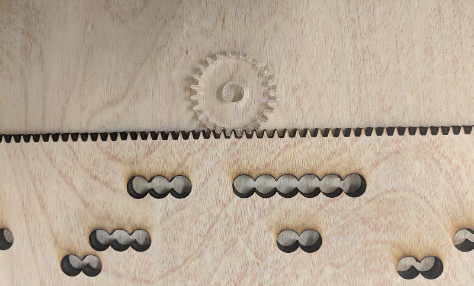

Sprint 3
Sprint Goals
- Fix the issues from Sprint 2 with feeding in the song sheet
- Recycle marbles after they hit pipes
- Play variable note durations
- Expand range to an entire octave of notes
Fixing Grip Issues
In Sprint 2 we discovered that wheels were unable to consistently grip the sheet. To address this issue in Sprint 3, we switched to a rack and pinion system as shown below. This mechanism proved much more effective at gripping the sheet and improved our control over spatial precision.

Recycling Marbles
Next, we focused on our goal of recycling marbles so the machine can play continuously without human intervention. This required three components: collecting the marbles after they hit the pipes, lifting marbles back to the top, and subsequently directing marbles into the reservoir.
First, to gather the marbles together, we added a pair of ramps in the base of the machine, so that all the marbles would collect in one corner.

Next, we needed a good way to bring the marbles back to the top at a fast enough rate that they could keep up with a song sheet.
The two most promising options we considered were either a belt (possibly magnetic) that would lift marbles back up to the reservoir or a
wheel that would carry marbles in compartments and then allow them to roll out at the top. We ultimately chose the wheel due to its high marble capacity and impressive aesthetics.

After the wheel brings the marbles back up, they roll into a collection tray that guides them back into the reservoir to be used again.

Expanding Range
We expanded the number of pipes from 5 to 13, allowing us to greatly increase the number of songs we could play. The CAD from Sprint 2 was designed parametrically so that changing the number of pipes would be relatively simple. However, remanufacturing our entire machine took up a lot of time, and we were unable to implement variable song speed.
Instead, we implemented a workaround by varying the distance between holes instead of the speed of the sheet.
Sprint Results
Finally, here is our final machine, fully assembled!

Looks impressive, right? Good, because it doesn’t work.
Unfortunately, after finally assembling the device at the end of sprint three, we found three major issues with playing notes:
- We cut the ramps out of the wrong material, so we sanded them down to get them to fit. This imprecise sanding caused variability in ramp position and led to marbles missing their pipes.
- Since we were so busy with fabrication and assembly, we took a shortcut in mounting the pipes by holding them all at the same points rather than at ¼ and ¾ of the way along their length (the points that cause the best resonation). This caused some pipes to resonate very poorly and therefore be almost inaudible in the song.
- Due to size and position of some of the dividers in the marble reservoir, marbles often got clogged going through the opening.
Additionally, we had a few problems with our recycling mechanism:
- The collection ramps at the bottom of the machine were too shallow, so marbles did not roll down correctly.
- We could not get the wheel to turn with the stepper motor, because it required more current and voltage than we could supply.
- The marbles fell out of our wheel later than predicted and missed our catching mechanism.